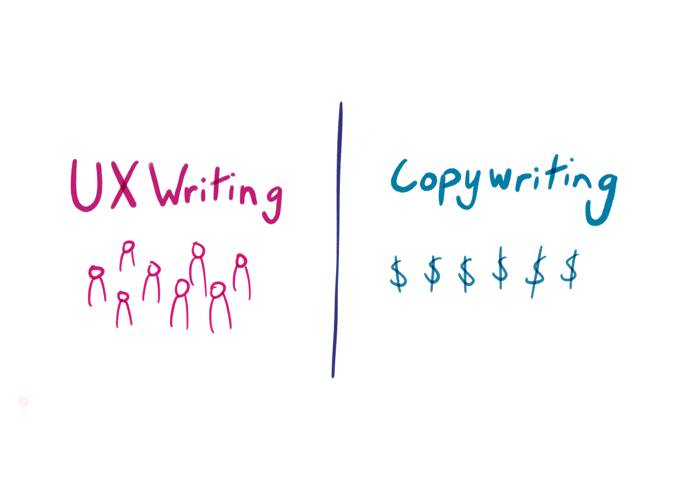

¿Qué es el copywriting y por qué es importante en el diseño web?
¿Cuál es la diferencia entre copywriting y UX writing?

¿Cómo influye el tono y la voz de la marca en el copy de una página web?
¿Qué técnicas de copywriting pueden mejorar la conversión en una web?
- Uso de llamados a la acción claros y atractivos (CTAs): Phrases como "Compra ahora" o "Suscríbete gratis" que guían al usuario.
- Pruebas sociales y testimonios: Mostrar opiniones y experiencias de otros usuarios genera confianza.
- Beneficios sobre características: Resaltar lo que el usuario ganará al tomar acción, no solo las características del producto.
- Urgencia y escasez: Mensajes como “Oferta limitada” o “Solo quedan 5 unidades” pueden incentivar la acción inmediata.
- Pruebas A/B: Experimentar con diferentes versiones del copy para ver cuál tiene mejores resultados.
¿Cómo se equilibra el texto con el diseño visual para mejorar la experiencia del usuario?
¿Cuáles son los errores más comunes en el copy de una página web y cómo evitarlos?
- Texto excesivamente largo o complicado: Evitar párrafos interminables y lenguaje técnico. El texto debe ser fácil de leer y directo.
- Falta de enfoque en el usuario: El copy debe centrarse en los beneficios para el usuario, no solo en las características del producto.
- No tener llamados a la acción claros: Sin un CTA evidente, los usuarios no sabrán qué hacer después de leer.
- Incoherencia en la voz y tono de la marca: Asegurarse de que el tono y la voz sean consistentes con la personalidad de la marca. Para evitarlos, se deben realizar pruebas, ser concisos, poner al usuario en el centro del mensaje y mantener una redacción coherente.
Cómo se puede optimizar el copy para mejorar el SEO sin sacrificar la claridad del mensaje?
¿Qué papel juega el storytelling en el copywriting web?
¿Cómo adaptar el copy a diferentes formatos y dispositivos (móvil, desktop, etc.)?
¿Cuáles son las herramientas y recursos más útiles para mejorar el copywriting en diseño web?
- Grammarly: Para mejorar la gramática y el estilo del texto.
- Hemingway Editor: Ayuda a simplificar y hacer el texto más directo.
- CoSchedule Headline Analyzer: Para evaluar y optimizar titulares.
- Google Analytics: Para analizar qué copy está funcionando mejor en términos de conversión.
- BuzzSumo: Para encontrar ideas de contenido populares y tendencias en tu nicho.
- Yoast SEO: Para optimizar el copy en cuanto a SEO en WordPress.
El copywriting es el arte de escribir textos persuasivos con el fin de atraer y convencer al público objetivo de realizar una acción específica, como comprar un producto, suscribirse a un boletín o llenar un formulario. En el diseño web, el copywriting es fundamental porque puede transformar la experiencia del usuario y generar conversiones. Un buen copy ayuda a que el mensaje sea claro, persuasivo y atractivo, guiando al usuario a lo largo del sitio web y facilitando su interacción con los elementos de la página.
El copywriting tiene como objetivo persuadir al lector y motivarlo a tomar una acción concreta, como comprar o registrarse. Es más comercial y promocional. En cambio, el UX writing se enfoca en crear textos que mejoren la experiencia del usuario en términos de navegación, claridad y usabilidad. Mientras que el copywriting busca generar conversión, el UX writing está más centrado en la funcionalidad y en hacer que la interacción con la web sea intuitiva, sin distraer al usuario del objetivo principal.
El tono y la voz de la marca definen cómo se comunican los mensajes de la empresa, influenciando la percepción de los usuarios. La voz es el estilo y personalidad que mantiene la marca a lo largo del tiempo, mientras que el tono puede variar según el contexto (más serio, amigable, formal o divertido). En el copy de una página web, ambos elementos son cruciales para crear una conexión emocional con el usuario. Si la voz y el tono están alineados con los valores de la marca y las expectativas del público, el copy será más efectivo y resonará mejor con los usuarios.
Algunas técnicas clave para mejorar la conversión incluyen:
El equilibrio entre texto y diseño visual es esencial para que la web sea fácil de navegar y atractiva. El texto debe ser conciso y claro, evitando sobrecargar al usuario con demasiada información, mientras que el diseño debe resaltar las partes más importantes del contenido, como los encabezados, llamados a la acción y elementos clave. Un diseño limpio con suficiente espacio en blanco ayuda a que el texto sea legible, y el uso adecuado de tipografía y colores hace que el mensaje se comunique de manera efectiva sin distraer al usuario.
Algunos errores comunes incluyen:
Para optimizar el copy para SEO, es necesario incluir palabras clave relevantes que el público objetivo está buscando, pero sin forzarlas de manera artificial. Utiliza las palabras clave en títulos, subtítulos y en el texto principal de manera natural. Además, es importante crear contenido de calidad, bien estructurado, que aporte valor al usuario. Utiliza también meta descripciones atractivas y concisas y optimiza las imágenes con texto alternativo, siempre asegurándote de que el mensaje siga siendo claro y comprensible.
El storytelling o la narración de historias juega un papel importante al crear una conexión emocional con el usuario. Las personas suelen recordar las historias mejor que los datos o argumentos fríos. En el copywriting web, contar una historia que resuene con los intereses o problemas de los usuarios puede hacer que se sientan identificados, lo que aumenta las posibilidades de conversión. Al integrar storytelling, puedes humanizar la marca y hacer que los usuarios se involucren más.
El copy debe adaptarse al tamaño de la pantalla y las necesidades del usuario en cada dispositivo. En dispositivos móviles, el texto debe ser más conciso y fácil de leer, con botones grandes y llamados a la acción claros. En desktop, puedes ser un poco más detallado, pero siempre manteniendo la estructura fácil de seguir. La clave es priorizar la legibilidad y asegurarse de que el mensaje se mantenga claro, independientemente del formato.
Algunas herramientas útiles incluyen: